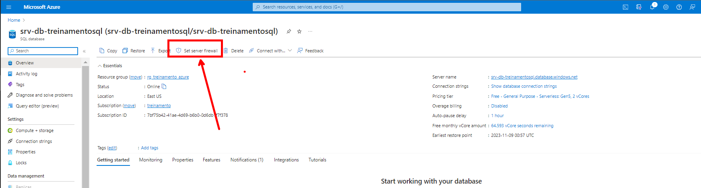
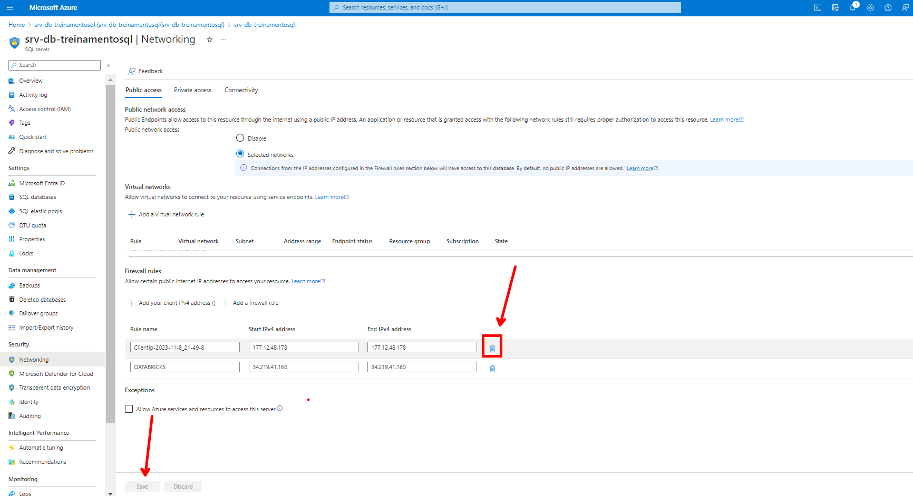

Projeto BI Zero TO DW
5 - Ingestão dos Dados do Azure SQL Databse
Pré-Requisito para ingestão dos dados do Azure SQL Database.
| Sequência | Ação | Detalhamento |
|---|---|---|
| SEQ-2.1 | Provisionamento do Azure SQL | Provisionamento de um banco de dados no Azure |
| SEQ-2.2 | Configuração do Ambiente Azure | Criação de toda a estrutura de tabelas e dados |
Atividades que serão realizadas nessa etapa.
| Sequência | Ação | Detalhamento |
|---|---|---|
| SEQ-01 / SEQ-02 | Configuração de Biblioteca | Instalação da Biblioteca "sqlalchemy" |
| SEQ-03 | Consumindo Arquivo JSON | Arquivo com as credenciais de acesso ao Azure SQL Database |
| SEQ-04 | Selação das Tabelas | Identificar quais serão as tabelas usadas durante o processo de ingestão |
| SEQ-05 | Extração dos Dados do Azure SQL | Coleta dos Dados do Azure SQL |
| SEQ-06 | Persistir os Dados em Parquet | Os dados deverão ser persistidos no diretório de cada tabela em formato parquet. |
O arquivo do Notebook é encontrado aqui. Notebook Ingestão Dados Azure SQL Database
SEQ-5.1 - Configurando Bibliotaca sqlalchemy
A biblioteca "sqlalchemy" será usada para realizar a conexão com o Azure SQL Database.
SEQ-5.2 - Importando das bibliotecas
Seleção e Importação das bibliotecas que serão usadas
Validar se existe a necessidade de importar todas as bibliotecas.
from sqlalchemy import __version__ as sa_version, create_engine, text
import json
import pandas as pd
SEQ-5.3 - Arquivo Parâmetro de Conexão com Database
Importação do Arquivo JSON que será usado para buscar informações de conexão com o Azure SQL Database
Esse arquivo JSON terá a seguinte estrutura.

O arquivo será lido e as informações de servidor, banco de dados, usuário e senha serão armazenado nas variáveis.
Esse modo de trabalhar é melhor pois você não expõem as suas senhas e mantém um único ponto de alteração.
No Azure você pode armazenar suas credenciais no Azure Key Vault.
dfjson = pd.read_json("https://raw.githubusercontent.com/dbaassists/Projeto_BI_Zero_TO_DW/main/04_ARQUIVO_CONFIG/config_azure_sql.json")
server = dfjson['Config']['server']
database = dfjson['Config']['database']
username = dfjson['Config']['username']
password = dfjson['Config']['password']
SEQ-5.4 - Extração Dados Azure SQL Database
Identificação das Tabelas do Azure SQL Database que serão extraídas.
Obs: Para esse nosso projeto, estaremos importando todas as tabelas do banco.
df = spark.read \
.format("jdbc") \
.option("url", f"jdbc:sqlserver://{server};database={database}") \
.option("query", """SELECT s.name + '.' + t.NAME AS Nome_Tabela
FROM sys.tables t
INNER JOIN sys.schemas s
ON t.schema_id = s.schema_id""") \
.option("user", f"{username}") \
.option("password", f"{password}") \
.load()
Visualizando o conteúdo retornado da execução da consulta.
SEQ-5.5 - Extração de Dados
Após a extração dos dados do Azure SQL Database, os dados serão persistidos na camada landing zone em formato parquet.
Comentando um pouco o script abaixo:
- No fluxo abaixo, nosso processamento irá trabalhar em loop uma vez que já identificou os objetos que precisam ser extraidos no passo "SEQ-5.4" e agora irá realizar a consulta de todos eles e por último estará salvando os dados no diretório "dbfs:/FileStore/tables/landing_zone/" em formato parquet.
lista_tabelas = df.collect()
for tabela in lista_tabelas:
tabela_paquet = tabela['Nome_Tabela'].replace('dbo.','').lower()
print(tabela_paquet)
diretorio_parquet = "dbfs:/FileStore/tables/landing_zone/{0}".format(tabela_paquet)
df = (spark.read
.format("jdbc")
.option("url", f"jdbc:sqlserver://{server};database={database}") \
.option("query", "SELECT * FROM {0}".format(tabela['Nome_Tabela']))
.option("user", f"{username}") \
.option("password", f"{password}") \
.load()
)
(df.write
.format('parquet')
.mode("overwrite")
.save(diretorio_parquet)
)
SEQ-5.6 - Firewall Azure SQL Database - Liberando acesso ao Banco
exec sp_set_firewall_rule N'nome_regra', '0.0.0.0', '0.0.0.0'
Ou podemos fazer a liberação acessando o portal do Azure.

Depois realizamos o cadastro da regra.

SEQ-5.7 - Firewall Azure SQL Database - Revogando acesso ao Banco
Ou podemos fazer a revogação acessando o portal do Azure.
Depois realizamos a entrada referente a regra.
